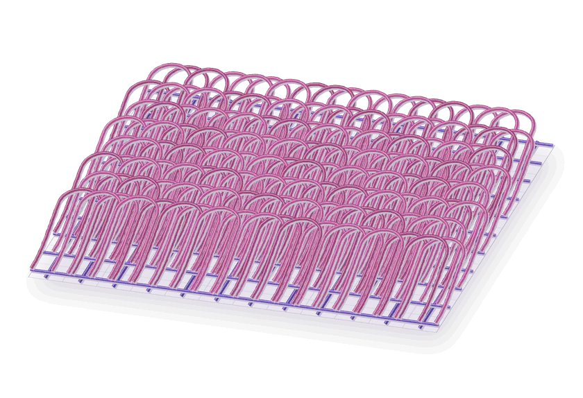

Filafabric
Textile G-code studio
A digital atelier for textile experiments
The shape of
flexible things.
A new way to compose fabric. Discover the expressive possibilities of printed loops, meshes and lace, and develop a material language of your own.
